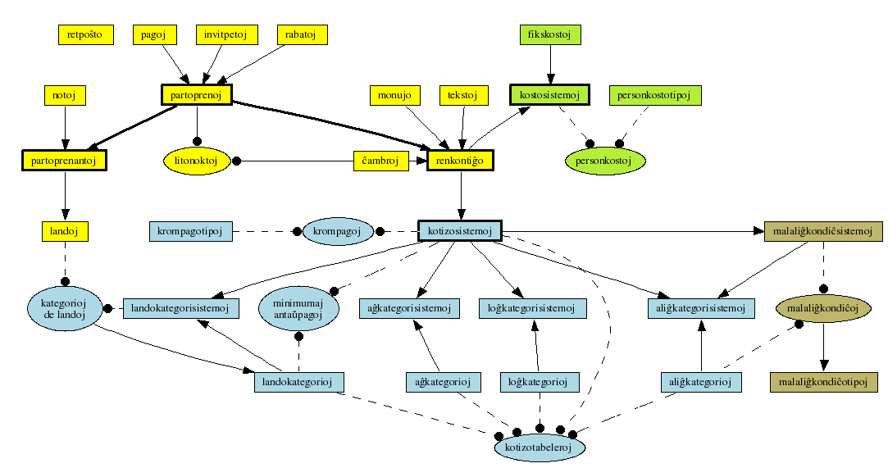

Ŝanĝoj de la programo
Jen listo de ŝanĝoj inter la unuopaj SVN-versioj.
Puraj ŝanĝoj de komentoj aŭ similaj etaĵoj ne estas listigitaj.
Ĉi tie aperas nur ŝanĝoj de la ĉefa programo (/programo/ en SVN)
kaj de la IS-specifaj variantoj, ne ŝanĝoj de la retpaĝo. Pro tio
estas kelkaj truoj inter la SVN-revizo-numeroj.
Aktuala revizo ($Revision$)
notoj.php reverkita, kaj novaj funkcioj por iloj_sesio.php.
- route.php
- Uzo de novaj funkcioj el iloj_sesio.php.
- notoj.php
- tute reverkita, kun pluraj funkcioj por la farendaĵoj
anstataŭ unu longa kodo-bloko.
- iloj/iloj_kotizo.php
- Specialtraktado de la kazo, ke la renkontiĝo ne havas kotizosistemon.
- iloj/iloj_sesio.php
- tute reverkita, novaj funkcioj por meti partoprenanton/kaj/aŭ partoprenon al iu valoro, se necesas.
- iloj/iloj_html.php
tabel_entajpbutono() havas aldonan parametron kaj tiel alian funkcimanieron, se bezonatas.- iloj/objektoj.php
- nova metodo
skribu_kreante_se_necesas(), kiu aŭ kreas novan (datumbazan) objekton,
aŭ ŝanĝas ekzistantan.
Revizo 201
Cimo #13845 (komenco), kaj komenco de reverkado de notoj.php
- sercxrezultoj.php
- Uzo de la nova serĉfunkcio en unu loko (germanoj_laux_landoj), por elprovi.
Krome forigo de la uzo de "extra"/"okupigxtipo" (kiu ne bezonatas),
aldono de plia serĉilo por subteni la novan serĉfunkcion.
- notoj.php
- Ioma restrukturado - sed ankoraŭ ne finita.
- iloj/iloj_html.php
donu_ligon() kaj ligu() havas nun aldonan
parametron por pliaj atributoj, ekzemple event-funkcioj.- iloj/iloj.php
- voko de nova dosiero objekto_sercxilo.php.
- iloj/objekto_sercxilo.php
- Reimplementado de sercxu() en objekta formo - ĝis nun nur la
HTMLa varianto, tamen.
- iloj/iloj_cxambroj.php
- nova funkcio
montru_litojn_de_ppeno().
Revizo 200
Cimo #14390 (sed ankoraŭ ne finita)
- publikaj_skriptoj/lib/shablono.php
- Plisimpligo de la Reen/sekven-butonoj
- publikaj_skriptoj/2008/Aligxilo2.php
- valida HTML
- publikaj_skriptoj/2008/kontrolu.php
- pli detala komparo de $_POST['sendu'], por
eviti tiun IE-misfunkcion (sed ankoraŭ ŝanĝenda)
Revizo 199
Gramatiko, noto-ligoj, ordigado
- partrezultoj.php
- revortumado de la informo pri notoj (#14408), aldono de ligo por
krei novan noton (#13523).
- sendumesagxon.php, partsercxo.php, partrezultoj.php, sercxrezultoj.php,
iloj/iloj_html.php
- Gramatiko (itismo!): prilaborata -> prilaborita en pluraj
lokoj (sed nur por la tekstoj montrataj, ne por la datumbaza
kampo, ĝis nun).
- iloj/iloj.php
- nova funkcio iom() por formati kvantojn
- akceptado-kontroloj.php
- uzo de listu_notojn() anstataŭ preskaŭ identa kopio de ties kodo.
Revizo 196
Forigo de retpoŝtadresoj (#11732).
- renkontigxo.php
- Forigo de retpoŝtadresoj.
- sxablonoj/dua_konfirmilo_retposxto_de.txt, sxablonoj/dua_konfirmilo_retposxto_eo.txt
- Forigo de retpoŝtadreso, kaj de unulita-ĉambro-indiko.
Revizo 195
Cimo #13687
- iloj/kreu_akceptofolion.php
- Aldono de renkontiĝo-nomo kaj -loko (cimo #13687),
iometa reorganizado (de kodo) kaj reformatado (de la rezulto).
Revizo 193
refunkciado (= kompletigo de antaŭaj ŝanĝoj), reordigado,
dokumentado
- administrado.php
- restrukturigo (disigo al pluraj funkcioj, anstataŭ ke ĉio estu rekte
en la paĝo), forigo de nefunkciantaj punktoj (backup).
- iloj/kreu_nomŝildojn.php
- korekto de require_once-voko, ebleco savi printadon ankaŭ
por specialaj nomŝildoj
- iloj/diversaj_retmesagxoj.php
- pludono de parametroj en
sendu_invitilomesagxon(), por ke la
administranto-adreso kaj la sendanto-nomo aperu en la mesaĝo.
- iloj/mangxkuponoj.php
- iloj/kreu_akceptofolion.php
- korekto de require_once-voko + dokumentado
Revizo 186
korekto de nefunkcianta aliĝilo
- publikaj_skriptoj/2008/AligxiloDankon.php
- ŝovo de
require_once-vokoj, por ke sendu_auxtomatajn_mesagxojn denove funkciu (post ŝovo de uzata funkcio al iloj/retmesagxiloj.php.
- iloj/retmesagxiloj.php
- La indikaj eldonoj pri sendo de mesaĝoj nun estas malŝalteblaj.
Revizo 185
Revizo 184
Pli pri cimo #13768, kun ordigado.
- partrezultoj.php
- forigo de ne plu bezonataj partoj, kaj ŝanĝo al
sendu_informmesagxon_pri_programero()
anstataŭ sendu_auxtomatajn_mesagxojn.
- sendumesagxon.php
- integrigo de la enhavo de
kreunoton() (el iloj_mesagxoj.php)
al faru_noton_el_gxi.
- specialaj_skriptoj/sendu_adresaron-2005.php,
specialaj_skriptoj/sendu_adresaron-2006.php,
specialaj_skriptoj/sendu_adresaron-2007.php,
specialaj_skriptoj/sendu_adresaron-2008.php
- forŝovo al
malnovajxoj/ pro evidentaj kialoj.
- publikaj_skriptoj/2008/AligxiloDankon.php
- Uzo de
sendu_invitilomesagxon() kaj sendu_informmesagxon_pri_programero() aldone al sendu_auxtomatajn_mesagxojn,
la lasta baldaŭ estos forigota. Krome mi forigis la vokon de
sendu_ekzport().
- route.php
- Riparo - nova noto kaj notojn ne plu funkciis en PHP 4
pro ne-difino de
http_redirect.
- cxambrookupantoj.php
- forŝovo al
malnovajxoj.
- iloj/diversaj_retmesagxoj.php
- nova funkcio
sendu_informmesagxon_pri_programero.
Revizo 183
Cimo #13528
- iloj/iloj_html.php
- La funkcio
hazard_ligu() (por ligi al dosieroj)
nun montras ilin ĉiam en nova kadro/fenestro, kaj pro tio
ne plu bezonas la trian parametron.
- administrado.php, iloj/kreu_adresaron_tcpdf.php
- adaptitaj al la nova uzo de
hazard_ligu().
- iloj/kreu_adresaron.php
- forŝovita al
malnovajxoj/.
Revizo 182
Adresaro, index-paĝo.
- administrado.php, iloj/kreu_adresaron_tcpdf.php
- Restukturado de la adresaro-kreilo,
kaj dume solvado de cimoj #13524 kaj #13766.
- iloj/iloj_html.php
- Nova funkcio
metu_stilfolion_kaj_titolon(), kaj ties
uzo en HtmlKapo()
- index.php
- Uzo de
metu_stilfolion_kaj_titolon() (tiel nun aperas
la nomo de la renkontiĝo en la titollinio de la retumilo),
korekto de forgesita $ (kiu kaŭzis tutan ne-eblon montri
la paĝon).
- doku/shanghoj.php
- mi forigis multajn HTML-erarojn, do nun la paĝo estas valida.
Revizo 180
Adresaro-retmesaĝo-reimplementado kaj rilataj ŝanĝoj.
- partrezultoj.php, sercxrezultoj.php
- kosmetikaĵoj
- administrado.php, stilo.css,
specialaj_skriptoj/sendu_adresaron_gxenerale.php,
specialaj_skriptoj/sendu_duan_informilon.php
- markado de specialaj skriptoj per ruĝa kadro.
- specialaj_skriptoj/sendu_adresaron_gxenerale.php,
sxablonoj/adresaro_retposxto.txt
- nova adresaro-sendilo, daŭre uzebla (ne nur por unu jaro).
La ŝanĝenda parto de la teksto estas nun en la datumbazo.
- iloj/iloj_tekstoj.php
- nova funkcio
trovu_necesajn_tekstojn().
- iloj/iloj_html.php
- diversaj etaj plibonigoj kaj korektoj (kaj unikodigo de la
dokumentajxo)
Revizo 179
Cimo #13519
- cxambrostatistiko.php
- Restrukturigo de la kodo, por ebligi plurajn similajn
tabelojn, por diversaj alvenstatoj.
Revizo 178
Cimo #13597
- partrezultoj.php
- forigo de ligoj al rabato-ŝanĝo-paĝo kaj pago-ŝanĝo-paĝo, se
la aktuala uzanto ne rajtas rabati aŭ ŝanĝi ion pri mono.
Krome aldonis titolo por la du tabeloj.
Revizo 177
Cimo #14386
- shablonoj/unua_konfirmilo_de.txt, shablonoj/unua_konfirmilo_eo.txt
- Aldono de paragrafo pri la provizoreco de la kalkulado.
Revizo 176
Diversaj cimoj rilate al la serĉfunkcio
- partsercxo.php, sercxrezultoj.php
-
korektis serĉon pri landokategorioj (nun depende de
kotizosistemo kaj ties kategoriosistemo) (sen cimo-numero)
- partsercxo.php
- Fiksis cimon #14387 (estis > anstataŭ <),
krome kelkaj kosmetikaĵoj
Revizo 175
Forigo de ne plu bezonata objektoj_kotizo.php (en IS-konfiguro).
Revizo 174
Cimo #14388 (nur en IS-specifa konfiguro)
Revizo 173
korekto de Cimo # 14385.
- publikaj_skriptoj/2008/Aligxilo3a.php
- Je la ŝanĝoj en revizo #143 mi forgesis trakti tiun ĉi dosieron ...
ĝi ankoraŭ referencis al
datumbazkonekto.php, kiu ne
plu ekzistas. Nun ŝanĝita al iloj/iloj.php.
Revizo 172
novaj dokumentoj por iloj_sql.
- iloj/iloj_sql.php
tuta renovigo de la dokumentaĵo, kaj dume kelkaj poluradoj pri
la interna funkciado kaj la interfaco:
-
kreu_as_esprimon nomiĝas nun
kreu_tabelan_as_esprimon kaj havas pli simplan
implementadon, kun malmultege pli da skrib-laboro du el la tri
vok-lokoj.
-
eltrovu_laux_id
nun speciale traktas array()-oj kun nur unu elemento.
- nova funkcio
eltrovu_gxenerale por eltrovi unu
informon kun eble komplikaj kondiĉoj.
- forigis la neuzitan funkcion
jampartoprenis.
- pli pura implementado por
JMTdisigo() kaj
kontrolu_daton()
eltrovu_renkontigxo() nun nomiĝas
eltrovu_renkontigxon()
- transferi.php, partrezultoj.php, partopreno.php
eltrovu_renkontigxo() nun nomiĝas
eltrovu_renkontigxon()
- cxambro_sxangxo.php
- korektis eraron, kiu fakte nur funkciis pro stranga interpretado
de kompar-reguloj (t.e. uzo de ĉeno "XXXXX" kiel portempa valoro en int-kolumno de datumbazo) - nun ni uzas iun negativan valoron anstataŭe.
Revizo 172
Korektoj pri la aliĝilo.
- publikaj_skriptoj/2008/Aligxilo5.php
- Korekto de difekta konto-ligo.
- publikaj_skriptoj/2008/stilo.css.php
- korekto de la import-ligo al la nova adreso.
- publikaj_skriptoj/retpagxo.php, publikaj_skriptoj/lib/konfiguro.php
- adapto al voko de la aliĝilo per alia adreso (ekzemple
is.esperanto.de/ali/eo/2008/)
Revizo 170
- iloj/objekto_partopreno.php
- cimkorekto en
simpla_kampo1().
Revizo 169
- stilo.css
- korektoj de CSS-eraroj.
Revizo 168
kelkaj cimo-korektoj, restrukturigo de internaĵoj de entajpantoj.php
- entajpantoj.php
- reimplementado de la interna listo de rajtoj, kaj kio estas kreita el ĝi.
- iloj/iloj_sercxo_rezulto.php
- korekto de nefunkcia alineado de kolumnoj.
Revizo 167
reverkado de sendumesagxon.php (+ multaj ŝanĝoj de
dokumentaĵo)
- sendumesagxon.php
- preskaŭ tute renovigita, kun pli da eblecoj (ekzemple ŝanĝi sendanton
kaj temlinion), kaj espereble ne pli da problemoj. Bezonas elprovadon.
- iloj/iloj_sql.php
eltrovu_laux_id ne nur laŭ dokumentaĵo akceptas
array-parametrojn, sed tio nun ankaŭ funkcias ...- iloj/iloj_mesagxoj.php, iloj/retmesagxiloj.php
antauxnomo() ŝoviĝis al retmesaĝiloj.- iloj/diversaj_retmesagxoj.php
- nova funkcio
sendu_malauxtomatan_mesagxon_el_POST.
Revizo 166
ankoraŭ kelkaj finaj poluraĵoj de la aliĝilo.
- programo/publikaj_skriptoj/2008/Aligxilo4.php,
programo/publikaj_skriptoj/2008/Aligxilo5.php
- Aldono/ŝanĝo de ligoj al la retpaĝo pri pago-manieroj,
partoprenanto-listo, kondiĉoj.
Revizo 165
kosmetikaĵo por la aliĝilo.
- publikaj_skriptoj/2008/Aligxilo1.php, publikaj_skriptoj/2008/Aligxilo2.php, publikaj_skriptoj/2008/Aligxilo3.php, publikaj_skriptoj/2008/Aligxilo3a.php, publikaj_skriptoj/2008/Aligxilo4.php, publikaj_skriptoj/2008/Aligxilo5.php, publikaj_skriptoj/2008/kontrolu.php, publikaj_skriptoj/2008/kotizokalkulo.js.php, publikaj_skriptoj/2008/kotizokalkulo2.js.php, publikaj_skriptoj/2008/stilo.css.php, publikaj_skriptoj/2008/AligxiloDankon.php, publikaj_skriptoj/2008/konfiguro.php, publikaj_skriptoj/2008/aligxilo.php
- ŝanĝo de linfina stilo al LF
- publikaj_skriptoj/2008/Aligxilo5.php
- formatado de la atentigo per
<strong>.
Revizo 161
Fikso de Bug #13596, kun diversaj aliaj plibonigoj survoje.
- antauxpago.php
- tuta reverkado laŭ pli modernaj metodoj ...
- partrezultoj.php
- Korekto de la ligo al pago-redaktilo (nun
id= anstataŭ jena=.
- sercxrezultoj.php
antaŭpagoj: ioma minimumigo de la SQL-demando, samtempe pliampleksigo de la rezulto (nun kun ligo al la pago-redaktilo.)- route.php
- uzo de switch anstataŭ ripetaj if, kaj {@link http_redirect()} anstataŭ
{@link require()}.
- iloj/iloj_tekstoj.php
- forigo de ne plu uzata
anstatauxu() (kiu estis nur malpli bone
funkcianta varianto de {@link strtr()}), polurita implementado de
{@link montru_elekto_liston()}.
- iloj/iloj_html.php, iloj/iloj_sercxo_rezulto.php
- forigo de
sercxu() en iloj_html, kaj renomigo de sercxo_nova al sercxu en iloj_sercxo_rezulto. (Antaŭe estis
simpla pludono de la voko.) Krome kelkaj kosmetikaj ŝanĝoj de la kreita
HTML de sercxu().
- iloj/iloj_html.php
- ŝanĝo de la dokumenttipo de strict al transient, por havi malpli da
eraroj en la kreita HTML-dokumentoj. Tio tamen nur estas provizora solvo,
finfine ni tamen havu striktajn XHTML-dokumentojn.
- iloj/kreu_konfirmilon.php
- uzo de {@link strtr} anstataŭ anstatauxu (el tekstoj.php).
Revizo 160
- specialaj_skriptoj/zeichensatz.php
- dokumentado, uzo de {@link hazard_ligu()} el {@link iloj_html.php}
- sercxrezultoj.php
- plibeligo de supersigno, korekto de priskribo (ne-nulaj saldoj),
dokumentado.
- partopreno.php
- nova entajpilo por la TEJO-kotizo.
Revizo 159
- iloj/iloj_html.php
- dokumentado, alivortumo de kodigo-eltrovo en {@link eotransform()}
Revizo 158
- specialaj_skriptoj/zeichensatz.php
- refunkciado, diversaj plibonigoj.
- index.php
- dokumentado, uzo de $_POST/
- iloj/iloj_html.php
- dokumentado (nun en UTF-8),
eotransformado() nun ankaŭ
povas trakti kodigon "pdf-speciala".
- iloj/iloj.php
- ne plu uzas la (ekde #143 ne plu ekzistantan)
konfiguro/objektoj_kotizo.php, forigo de es(), estas_ekster_latin1() nun faras pli ĝustajn kontrolojn, multe da dokumentado
Revizo 153
- sxablonoj/unua_konfirmilo_de.txt, sxablonoj/unua_konfirmilo_de.txt
- aldono de eta teksto pri la provizoreco de la kotizotabelo.
- menuo.php
- Aldono de ligo al la projekta paĝaro.
Revizo 148
Korekto de Bug #13680.
- iloj/diversaj_retmesagxoj.php
kreu_kaj_sendu_unuan_konfirmilon() nun metas la sendodaton
de la unua konfirmilo en la datumbazon.- publikaj_skriptoj/2008/AligxiloDankon.php
- Ne plu mem memoras la sendodaton de la konfirmilo.
Revizo 147
Kontraŭo de Javaskript-injekto.
- iloj/objektoj.php
- Sekurecproblemo (Javascript-injektado) solvita, sed alia problemo
enkonduktia
(Bug #13761).
Revizo 146
Korekto de la titoloj al la novaj jaro (pli ĝuste,
sendependigo de tio).
- publikaj_skriptoj/2008/Aligxilo1.php,
publikaj_skriptoj/2008/Aligxilo3.php,
publikaj_skriptoj/2008/Aligxilo3a.php,
publikaj_skriptoj/2008/Aligxilo5.php
- uzo de
CH("aligxilo#titolo")
anstataŭ CH("/2007/aligxilo#titolo").
Revizo 145
Forigo de partoprenantoj - nova varianto
- partoprenforigo.php
- nova dosiero, por havi dialogon pri forigo de partoprenantoj kaj ties partoprenoj.
- iloj/objekto_partoprenanto.php
- ligas nun al la nova partoprenforigo-dosiero anstataŭ la malnova (jam de kelka tempo ne funkcianta) estingi-funkcio de partrezultoj.php.
Krome la
landokategorio()-metodo estas riparita.
- iloj/iloj_html.php
- nova funkcio
listu_notojn() (de iu partoprenanto).
- transferi.php, sercxrezultoj.php
- uzo de nova funkcio
listu_notojn()
Revizo 144
Aliĝilo nun funkcias ... espereble.
- publikaj_skriptoj/lib/shablono.php
- forigo de superfluaj funkcioj
komencu_artiston,
finu_artiston, komencu_alvenon,
finu_alvenon. Uzo de $titolo anstataŭ
aparta tradukebla teksto por la titolo de la aliĝilo. Kelkaj
formularero-funkcioj metas spacon antaŭ ebla posta teksto.
- publikaj_skriptoj/2008/Aligxilo4.php
- forŝovo de la Javaskript-parto al aparta dosiero, rekta uzo de
iloj/iloj.php anstataŭ
lib/datumbazkonekto.php.
Uzo de la nova kotizokalkulilo (anstataŭ la malnova).
Korekto de minumuma_antauxpago al minimuma_antauxpago :-)
- publikaj_skriptoj/2008/kotizokalkulo2.js.php
- nova dosiero, kun la Ĵavoskript-partoj el
Aligxilo4.php.
- publikaj_skriptoj/2008/Aligxilo5.php
- Korekto de
minumuma_antauxpago al minimuma_antauxpago :-), nova elektilo por ĉu aperi en la adresaro.
- publikaj_skriptoj/2008/kotizokalkulo.js.php
- pli komplika varianto pludoni la komencodaton, ĉar la
Javaskript-implementado en Firefox ne komprenas
new Date("2008-12-27") (kontraŭe al tiu en Opera).
- publikaj_skriptoj/2008/stilo.css.php
- diversaj adaptoj, por ke la aspekto estu taŭga (ekzemple larĝeco de
<select>, alineado de tabelaj ĉeloj, butonoj (sekven/reen)
- publikaj_skriptoj/2008/AligxiloDankon.php
- rekta uzo de
iloj/iloj.php anstataŭ
lib/datumbazkonekto.php.
- publikaj_skriptoj/2008/konfiguro.php
- nova dosiero, por renkontiĝo/aliĝilo-specifaj konfiguroj.
- partopreno.php
listo nun kun defaŭlta kazo, kaj novaj elektiloj por intolisto.- partoprenkontrolo.php
- forigo de specialkaz-aĵo por
listo
- iloj/iloj_kotizo.php
- nova metodo
limdato() por la kotizokalkulilo.
- iloj/objekto_partopreno.php
- Aldono de
adresaro al la konfirmilo-detaloj kaj
montru_aligxo, kaj tuta reimplementado de
montru_aligxo per novaj helpaj metodoj, por
ŝpari ripetan kodon.
- iloj/iloj_sql.php
- korekto en
protokolu (kiu ne eltenis la ŝanĝon de aldonu_al_datumbazo() por kompreni NULL-valorojn en revizo 138.
Revizo 143
forigo de kelkaj ne plu uzataj dosieroj (ankoraŭ en dosierujo malnova),
ekfunkciigo de la aliĝilo (kun nova kotizosistemo), kotizotabelo por
la retpaĝo, ...
- akceptado.php, konfiguro/objektoj_kotizo.php
- forŝovo al
malnovajxoj
- publikaj_skriptoj/listo.php, publikaj_skriptoj/publikkontrolo.php,
publikaj_skriptoj/publik_kotizo.php, publikaj_skriptoj/publik.php
- forigitaj dosieroj, neuzataj jam dum longa tempo.
- malnovajxoj
- Nova dosierujo, por ne plu uzataj dosieroj, el kiuj oni tamen eble iam volas ŝteli ideojn, nun kun la jenaj dosieroj:
- akceptado.php,
- konfiguro/objektoj_kotizo.php,
- publikaj_skriptoj/retpagxo.php
- nova dosiero (parte kopio de
lib/cxio.php),
por montri parton de la aliĝilo.
- publikaj_skriptoj/lib/*, publikaj_skriptoj/2008/*
- diversaj adaptoj, por ke la nova paĝaro funkciu, inter alie kun nova
kotizokalkulilo en Javaskripto, kiu ricevas tabelon de la
bazaj kotizoj en JSON-formo el la datumbazo.
Ankoraŭ ne finita.
- wp-kromprogramoj/aligilo-bazo.php
- nova opcio por la renkontiĝo-identigilo (de kiu renkontiĝo montri la tabelojn ktp.), ŝanĝo al vera datumbazo anstataŭ testa.
- wp-kromprogramoj/aligilo-aligxintoj-listo.php
- korekto de la regula esprimo, sinsekvo de parametroj, uzo de plenaj nomoj anstataŭ mallongigo
- wp-kromprogramoj/aligilo-aligxintoj-nombro.php
- uzo de opcio anstataŭ fiksa renkontiĝo-ID
- wp-kromprogramoj/aligilo-kotizotabelo.php
- nova kromprogramo: ebligas montradon de
la kotizotabelo laŭ la datumbazo.
- wp-kromprogramoj/README.txt
- Kiel aldoni novajn kromprogramojn (mi la saman eraron faris ĉiam denove,
nun espereble ne plu - aŭ almenaŭ mi ne plu devos longe serĉi).
- iloj/iloj_kotizo.php
- novaj metodoj en Kotizosistemo:
kreu_kotizotabelon kaj
kreu_kotizotabelparton, kiuj kreas array-strukturon
por la kotizotabelo.
- iloj/iloj_kotizo_formatado.php
- novaj klasoj (KotizoSistemFormatilo) por formati la tabelon kreitan de
kreu_kotizotabelo() - nuntempe implementita
nur en JSON-formato por
la aliĝila kotizokalkulilo,
sed mi ŝovos ankaŭ la HTML-formatadon ĉi tien.
- iloj/iloj_kotizo_kategorioj.php
- Uzo de
$GLOBALS por difino de globalaj variabloj (por ke tio
ankaŭ funkciu, se la dosiero estas vokata el funkcio), nova funkcio
eltrovu_landokategorion. En la aliĝkategori-tabeloj aperas ankaŭ
la renkontiĝo-specifa limdato nun, kaj la klaso havas novan
funkcion, kiu kalkulas ĝin.
- iloj/iloj_sql.php
- forigo de
eltrovu_landokategorion()
- iloj/iloj_html.php
montru_landoelektilon() havas novan parametron (la
renkontiĝon), relative al ties kotizosistemo ĝi montru la landokategorion.- iloj/objekto_renkontigxo.php
- nova funkcio
donu_kotizosistemon
Revizo 141
Kotizo-tabelado restrukturigita, kaj nun ankaŭ teksta versio.
- iloj/iloj_kotizo_formatado.php
- Nova: formatilo por la kotizo-kalkul-tabeloj, en apartaj klasoj
por la diversaj formatoj (HTML, PDF, teksto).
- iloj/iloj_kotizo.php
-
Diversaj ŝanĝoj:
- Kotizokalkulilo(): la kotizosistemo estas nun opcia
(defaŭlto: laŭ la renkontiĝo)
- cimokorekto ĉe nemembro-krompagoj en la tabelo
- forigo de funkcioj
html_formatu_linireston(),
kaj formatu_tabelon(), montru_kotizon,
anstataŭe kreu_kotizotabelon() kaj
tabelu_kotizon().
- partrezultoj.php
- Nur plu uzo de la nova kotizotabelo (HTML-formo). Nur plu montrado de
la nova unua informilo, butono anstataŭ simpla ligo por sendi.
- akceptado-pago.php
- Uzo de nova kotizo-tabelo (HTML-formo)
- stilo.css
- adaptoj por la HTMLa kotizotabelo (allineadoj dekstraj
aŭ maldekstraj)
- iloj/iloj_konfirmilo.php, sxablonoj/unua_konfirmilo_eo.txt,
sxablonoj/unua_konfirmilo_de.txt
- Uzo de nova kotizokalkulilo, aldono de kotizotabelo (teksta varianto)
al la unua konfirmilo.
- doku/aligilo-tabeloj.sql
- Aktuala versio de la datumbazskemo
- iloj/iloj.php
- nova funkcio
plilongigu, simpligita uft8-varianto de
str_pad.
- iloj/kreu_konfirmilon.php
- Uzo de nova kotizoformatilo (PDF-varianto)
- iloj/diversaj_retmesagxoj.php
kreu_kaj_sendu_unuan_konfirmilon nun mendas jam koditan
mesaĝon, anstataŭ kodi ĝin mem, por eviti misan alineadon de
kotizotabelo (kio dependas de kodigo).
- iloj/kreu_akceptofolion.php
- forlaso de "sur nomŝildo" kaj ŝovo de la partopreno-ID por eviti kolizon,
uzo de nova kotizomontrilo (PDF-varianto).
Revizo 138
Sistemo por trakti la kotizojn de malaliĝintoj.
- partrezultoj.php, sercxrezultoj.php
- korekto de tajperaroj
- kategorisistemoj.php
- Aldono de Malaliĝkondiĉsistemoj kaj malaliĝkondiĉotipoj
- doku/strukturo-kotizosistemo.png, doku/strukturo-kotizosistemo.dot
- Reordigo de iuj tabeloj, por ebligi pli bonan bildon.
- doku/kreu-grafikojn.sh
- Nova: bash-skripto por aŭtomate krei la .png-dosierojn
el la .dot-versioj.
- doku/strukturo-malaligxkotizosistemo.png, doku/strukturo-malaligxkotizosistemo.dot
- 
Pligrandigita diagramo, kun la malaliĝkondiĉoj
- konfiguro/ma-kondicxoj.php
- nova: diversaj funkcioj por uzo kiel malaliĝkondiĉoj.
- konfiguro/kondicxoj.php
- La plej multaj antaŭpagoj nun ne plu validas por malaliĝintoj.
- iloj/iloj_kotizo_malaligxo.php
- nova: klasoj
Malaligxkondicxsistemo kaj Malaligxkondicxotipo.
- malaligxkondicxotipo.php
- nova: redaktilo por malaliĝkondiĉotipoj.
- malaligxkondicxsistemo.php
- nova: redaktilo por Malaliĝkondiĉsistemoj.
- finkalkulado.php, iloj/iloj_kotizo.pho
- Kelkaj ŝanĝoj en la finkalkula tabelo:
- invitilo-kampo for
- alvenstato-kampo montras ankaŭ la trakton de malaliĝoj
- IS-kotizo-kampo montras nun la kotizon post ebla trakto de
malaliĝoj, same kiel la fina sumo
- montrado de IS-krompagoj nun funkcias.
- iloj/iloj_kotizo.php
-
- uzo de iloj_kotizo_malaligxo.php,
- la kotizosistemo konas sian malaliĝkondiĉosistemon kaj
havas metodon por redoni tiun objekton
- la kotizokalkulilo povas trakti malaliĝojn (per delegado al
la respondeca malaliĝkondiĉotipo en
traktu_malaligxon), kaj tiel kalkuli alian
kotizon por malaliĝintoj. Tio ankaŭ estos montrata en la
kotizotabelo (montru_kotizon).
- rabatoj ne plu estas kalkulataj por malaliĝintoj.
minimuma_antauxpago() nun funkcias.
- iloj/iloj_kotizo_kategorioj.php
- nova metodo
trovu_kategorion_laux_dato por la
aliĝkategorisistemo, uzata de trovu_kategorion
kaj de la malaliĝ-traktado.
- iloj/iloj_sql.php
aldonu_al_datumbazo kaj sxangxu_datumbazon()
nun povas trakti null-valorojn, per uzo de nova funkcio sql_quote.- iloj/iloj_html.php
- erarkorekto en
tabela_kondicxoelektilo(), nova (simila)
funkcio tabela_ma_kondicxoelektilo().
Erarkorekto en elektilo_simpla_db() (ne traktinte esperantajn signojn ĝuste).
- iloj/iloj.php
- ŝarĝo de
konfiguro/ma-kondicxoj.php, nova funkcio
estas_unu_el().
- iloj/iloj_kotizo_krompagoj.php
- forigo de superfluaĵoj.
- iloj/objektoj.php
- nova metodo
korektu_kopiitajn(), vokata de
kopiu(), por anstataŭo en subklasoj.
(Ne uzata ĝis nun, evidentiĝis ke la problemo tiel ne estas
solvebla, anstataŭe la ŝanĝo en iloj_sql (vidu supre).)
- kotizosistemo.php
- + formularero por elekti la malaliĝkondiĉsistemon.
Revizo 137
Diversaj ŝanĝoj intertempe ...
- wp-kromprogramoj/aligilo-bazo.php, wp-kromprogramoj/aligilo-aligxintoj-listo.php, wp-kromprogramoj/aligilo-aligxintoj-nombro.php
- Kelkaj kromprogramoj por WordPress, por montri tie la liston de aliĝintoj,
kaj la nombron de aliĝintoj. Pliaj eble sekvos.
- publikaj_skriptoj/2008/*
- skriptoj uzendaj de ekstere, ekzemple la aliĝilo, en versio uzonta (post necesaj ŝanĝoj) en 2008. Kopio de 2007aj dosieroj (ekster tiu programo).
- krompagotipo.php
- + entajpejo por mallongigo
- konfiguro/opcioj.php, iloj/iloj_kotizo.php
- + opcioj por tiuj pagotipoj, kiuj estas konsiderataj kiel "surlokaj",
kaj uzo de tiu opcio por eltrovi, kiuj pagoj estas surlokaj pagoj.
Hmm, eble indas meti tiun en la datumbazon, ĉu ne?
- finkalkulado.php
- ŝanĝo al nova sistemo, kion montri. (Ankoraŭ necesas forigi
restojn de la malnova sistemo.)
- iloj/iloj_kotizo.php
- nova funkcio
donu_informon por doni la necesajn informojn
por finkalkulado.php, per granda switch.
- iloj/objekto_partopreno.php, administrado.php, cxambrostatistiko.php, finkalkulado.php, gxenerala_sercxo.php, partoprenkontrolo.php, partrezultoj.php, partsercxo, sercxrezultoj.php, statistikoj.php,
- Pliaj variantoj por
alvenstato, nome "vidita, sed ne akceptiĝis" kaj "ne venis/venos, sen malaliĝi".
- iloj/objekto_partopreno.php, partrezultoj.php, (datumbazo)
- forigo de la kampoj
venos kaj alvenis, kiuj
ŝajne estas ankoraŭ de iu tre frua versio de la datumbazo, kaj ne plu
estas uzataj.
- iloj/iloj_sesio.php
- Nova dosiero, kiu enhavas funkciojn por trakti sesiajn variablojn.
- iloj/iloj_html
- nova funkcio
elektilo_kun_butono().
- renkontigxo.php
- Funkcio por krei novan renkontiĝon finfine implementita.
- partoprensxangxo.php
- Nova dosiero, ĝi faru unuopajn ŝanĝojn pri partopreno-objektoj
(anstataŭ partrezultoj.php).
Revizo 133
2008-01-15, adresaro (nun sendita), ktp.
- specialaj_skriptoj/sendu_adresaron-2008.php
- Finaj adaptoj por sendado
- doku/farendajhoj.html
- Kelkaj aldonoj.
- konfiguro/datumaro.php
- Forpreno de la pasvorto. (La aktualan pasvorton de la servilo mi
jam ŝanĝis, do ne plu indas elprovi la antaŭan.)
- iloj/kreu_adresaron.php
- Indiko, ke oni ne plu uzu tiun ĉi, sed la tcpdf-varianton.
- iloj/kreu_adresaron_tcpdf.php
- reŝalto al LF por la linrompiĝoj.
- diversaj dosieroj
- SVN-eco:
svn:eol-style LF je ĉiuj PHP-dosieroj, kiuj tion
ankoraŭ ne havis.
Revizo 132
2008-01-12, adresaro ...
- iloj/kreu_adresaron_tcpdf.php
- nun nur la uloj kun
listo = 'J'.
- specialaj_skriptoj/sendu_adresaton-2008.php
- Nova: Adresaro-senda programo, kun la teksto kaj kondiĉoj por 2008.
Revizo 131
2008-01-11, surlokaj ŝanĝoj de Würzburg
- administrado.php
- malaktivigis funkcion
esso().
- akceptado-fino.php
- cimkorekto pri domotipo (estis 'j' anstataŭ 'J').
- akceptado-pago.php
- Cimkorekto: dato de surloka pago mankis.
Krome nun uzo de nova kotizokalkulilo
- enspezokalkulado.php
- Cimkorekto: kostokalkulilo bezonas la renkontiĝon.
- iloj/iloj_kostoj.php
- Cimkorekto: uzo de pluralo en datumbazkampoj
- iloj/iloj_kotizo_kategorioj.php
- Cimkorekto: funkciigo de
dekodu_kategoriojn(), kiu
konsistis preskaŭ nur el eraroj.
- iloj/iloj_sercxo_rezulto.php
- Adapto de kelkaj specialaj konstruktoj al funkciado kun PHP 5, kie
aperis strangaj eraroj.
- iloj/iloj_sql.php
- Cimkorekto en
datumbazsxangxo() (pri uzo de malplena
opcia argumento)
- iloj/tcpdf_php4/config/tcpdf_config.php
- Adapto de la adresoj de
is/admin al
is/admin-test. Pripensenda estas iom pli ĝenerala
sistemo (uzo de $GLOBALS['prafix'], ekzemple).
- partopreno.php
- aldono de atentigo, ke oni elektu "parttempa"
- partsercxo.php
- Ioma reformatado, serĉeblecoj pri TEJO- kaj GEJ/GEA-membreco.
- route.php
- cimkorekto: nun ankaŭ la partoprenanto estas metata en la sesion,
se oni elektis partoprenon.
- sercxrezultoj.php
- La kalkulado de ne-nula saldo nun uzas la novan kotizokalkulilon,
la detala serĉo komprenas la aldonojn ĉe partserĉo.php.
Revizo 130
2007-12-21, ebleco pagi al TEJO sen ricevi rabaton.
- akceptado-tejo.php, gxenerala_sercxo.php, partopreno.php, iloj/objekto_partopreno.php, iloj/iloj_kotizo.php
- Plia ebleco
p por tejo_membro_kontrolita
(en partopreno), kiu ebligas pagi kotizon (aŭ alian pagon) al TEJO,
sed ne ricevi rabaton.
- stilo.css, akceptado-lokaasocio.php, akceptado-tejo.php
- Pli bela formatigo de listo el elekteblecoj.
Revizo 129
2007-12-19, diversaj erarkorektoj de la lastaj tagoj.
- bildoj/infanojBuntaj-1.png, bildoj/infanojBuntaj-2.png,
bildoj/infanojBuntaj.png, bildoj/infanojSenkoloraj-1.png,
bildoj/infanojSenkoloraj-2.png, bildoj/infanojSenkoloraj.png
- diversaj versioj de la nova IS-simbolo.
- partsercxo.php, sercxrezultoj.php
- kotizo-kalkulilo-komparo
- route.php
- Pli bona erarmesaĝo
- konfiguro/kondicxoj.php
- korekto de unulita-ĉambro-krompago-kondiĉo (nur por homoj en
junulargastejo)
- partopreno.php
- forigo de kelkaj "kutima"-opcioj ĉe la entajpbutonoj.
- iloj/kreu_nomsxildojn.php
- Uzo de nova bildo (infanojBuntaj-2.png) anstataŭ la Eo-ovo.
- iloj/iloj_sercxo_rezulto.php
- ?
- iloj/objekto_partopreno.php
- korekto de tajperaro en
montru_aligxon().
- iloj/iloj_kotizo_kategorioj.php
- korekto de erara kategorio-kalkulado (de > al ≥).
- iloj/iloj.php, iloj/kreu_konfirmilon.php
- ŝovo de la funkcioj
estas_ekster_latin1() kaj bezonas_unikodon() al iloj.php.
- iloj/iloj.php
- korektitaj funkcioj pri pasvortkontroloj (
rajtas() kaj kontrolu_entajpanton()).
Revizo 128
2007-12-19
- tools-org -> ../tools-org/
- Hmm, tiu loko estas espereble pli bona.
Revizo 127
- iloj/tcpdf_1_53_0_TC034_php4.zip -> tools-org/tcpdf_1_53_0_TC034_php4.zip
- ŝovo de dosiero, por povi ĝin forigi el la labora kopio, kiun mi havas,
kaj tiel ŝpari iom da spaco.
Revizo 126
- cxambrostatistiko.php
- korekto de tajperaro, aldono de tuta partoprenantonombro.
- gxenerala_sercxo.php
- tajperaroj: prilaborita -> prilaborata, sercxtabellinio -> sercxelektolinio
(kaŭzis stultan erarmesaĝon)
- iloj/iloj_cxambroj.php
- erara voko de metodo en (ebla) null-objekto - nun kun taŭga kondiĉo.
Revizo 125
- sercxoj.php
- Ebleco redakti la meta-datumojn (nomo + priskribo) de
daŭrigita serĉo.
- administrado.php
- Forigis la (neniam uzitan) eblecon sendi retajn duajn konfirmilojn.
- gxenerala_sercxo.php
- + ISO-kodo de landoj
- akceptado-fino.php, akceptado-datoj.php
- kelkaj reformatadoj de la akceptadaj instrukcioj
- doku/farendajhoj.html
- Aktualigo - kio estas intertempe farita
- finkalkulado.php, iloj/mangxkuponoj.php
- Uzo de TCPDF kaj rilataj ŝanĝoj.
- iloj/kreu_nomsxildojn.php
- iloj/kreu_adresaron.php, iloj/kreu_adresaron_tcpdf.php, iloj/mangxkuponoj.php, iloj/kreu_akceptofolion.php
- Uzo de $prafix-relativaj dosierlokoj
- iloj/kreu_adresaron_tcpdf.php
- Adapto de formato
- iloj/iloj_cxambroj.php
- Korekto de eraro en la kalkulo de mankantaj litoj
Revizo 124
- partrezultoj.php
- sendado de duaj informilo nun estas notata en la datumbazo.
- administrado.php
- Uzu unikodan varianton de la konfirmilo (ĉiam - ni ja ne devas sendi
ĝin per retpoŝto).
- specialaj_skriptoj/sendu_duan_informilon.php
- nova dosiero por sendado de duaj informiloj. (Necesas adaptoj en la programkodo antaŭ uzi ĝin.)
- partoprenkontrolo.php
- forigo de Debug-teksteldono
- krompagotipo.php, iloj/iloj_kotizo_kategorioj.php
- nun kun loka nomo de krompagotipoj kaj aliĝkategorioj.
- doku/kotizosistemo.sql
- Nova: La strukturo kaj enhavo de la kotizo-sistem-relevantaj tabeloj.
- doku/aligilo-tabeloj.sql
- Aktuala versio de la datumbaz-strukturo.
- konfiguro/kondicxoj.php
- Adapto al iu ŝanĝo de la kategorioj-strukturo.
- iloj/iloj_kotizo.php
- Pli kompleta dulingveco de la kotizo-tabelo.
- iloj/kreu_konfirmilon.php
- Adapto al TCPDF-specialaĵoj, uzo de $prafix-relativaj dosierlokoj, forigo de nenecesaj kodo-partoj
- iloj/diversaj_retmesagxoj.php
- korekto de dosiernomoj.
- iloj/iloj_kostoj.php
- korekto de malĝusta foreach.
Revizo 123
- iloj/iloj_konfirmilo.php
- novaj funkcioj por krei la retmesaĝan tekston por la dua konfirmilo.
- iloj/diversaj_retmesagxoj.php
- nova funkcio por sendi la duajn konfirmiloj
- partrezultoj.php
- Uzo de la novaj duaj konfirmiloj anstataŭ la malnovaj
- sxablonoj/dua_konfirmilo_retposxto_de.txt, sxablonoj/dua_konfirmilo_retposxto_eo.txt
- novaj dosieroj: enhavo de la teksto por la dua konfirmilo-mesaĝo.
- doku/tekstoj.php
- Nova teksto: konf2_dua-informilo-teksto
- iloj/retmesagxiloj.php
- nova metodo
latin1a_teksto_estu, kaj ties voko de
auxtomata_teksto_estu, depende de la enhavo.
Krome sendu() nun sendu() printas post la sendado, kien
ĝi sendis.
- kreu_konfirmilon.php
- splitiĝo de
bezonas_unikodon, por povi testi ankaŭ
tekstojn, ne nur partoprenantojn.
La kreu_konfirmilon()-Metodo nun ankaŭ povas preni jam pretajn
objektojn, anstataŭ krei tiujn mem.
Revizo 122
- menuo.php
- forigo de elprovejo
- administrado.php
- Aldono de pluraj ligoj al subdosierujoj (+ iom da reformatado)
Revizo 121
- enspezokalkulado.php
-
Uzo de
tabela_elektilo() anstataŭ elektilo_simpla en apartaj tabeleroj,
ebleco elekti kostosistemon.
...
- iloj/iloj_kostoj.php
- nova Klaso kostokalkulilo, kun pluraj metodoj.
- iloj/objekto_partopreno.php
- Nova metodo
partopennoktoj().
- iloj/objekto_renkontigxo.php
- Nova metodo
renkontigxonoktoj().
- cxambrostatistiko.php, cxambroj.php, iloj/iloj_kotizoj.php, iloj/mangxkuponoj.php, iloj/iloj_cxambroj.php, iloj/iloj_kostoj.php
- Uzo de
...->renkontigxonoktoj() aŭ
...->partoprennoktoj() anstataŭ rekta
kalkulu_tagojn(...->datoj['de'], ...->datoj['gxis']).
Revizo 120
- iloj/iloj_kotizo_kategorioj.php
- Adapto de
enkodu_kategoriojn() al la
ŝanĝoj en Revizo 117 (kiuj kaŭzis ne-funkcion de la
kalkulado en enspezokalkulado.php).
Revizo 119
- iloj/iloj_sercxo_analizo.php
- certigas konekton de invitpetoj al aliaj tabeloj.
Revizo 118
- iloj/objektoj.php, invitpeto.php
-
La ŝanĝo en revizo 107 montriĝis problema.
Pro tio mi nun aldonis apartan funkcion
skribu_kreante_kun_ID(), kiu
konservas la ID, kaj nun uzas tiun funkcion (anstataŭ skribu_kreante())
por la invitpetoj.
Revizo 117
- administrado.php
- Rekta aliro al tekstoj.php (ne plu necesas iri tra renkontigxo.php)
- doku/tekstoj.txt
- Novaj tekstoj: konf2-sendanto-adreso, konf2-kunportu-reston.
- iloj/iloj_kotizo.php, iloj/iloj_kotizo_kategorioj.php
- Kategorioj-listoj nun enhavas kaj la identigilon de la kategorio,
kaj iun liberan tekston (povas esti dulingva) por klarigi ĝin. Pro
tio necesis adapti plurajn funkciojn.
- iloj/iloj_kotizo.php
- La kotizokalkulilo nun memoras krom la nombro de partoprennoktoj
tekston pri la fakto, ĉu estas tuttempa aŭ parttempa partopreno.
Tiu estas uzata en la kotizokalkulo-tabelo.
La interna formato de la kotizokalkulotabelo iom ŝanĝiĝis, inter
alie por ebligi tradukojn.
La PDF-kreila parto multe ŝanĝiĝis.
- iloj/iloj_tekstoj.php
- Ni nun fortranĉas spac-signojn (kaj similaĵojn) fine de tekstoj
antaŭ la uzado, ĉar tiuj estas malfacile videbla dum la entajpado,
kaj povus ŝanĝi la aspekton de la rezulto.
- iloj/kreu_konfirmilon.php
- Entute ni ŝanĝis de Latina-1 al UTF-8.
La adreso de la sendinto venas nun el la datumbazo, ni montros nur
la kotizotabelon (kiu enhavas nun ĉion necesan, ŝajne), ne plu la
antaŭan tabelon. Krome estis kelkaj etaj formatadaj ŝanĝoj.
Revizo 116
- renkontigxo.php
- Elektilo por la kotizosistemo de iu renkontiĝo.
- iloj/iloj_kotizo.php
- Kotizosistemo havas novan funkcion por eltrovi la minimumajn
antaŭpagoj por iu landokategorio.
montru_kotizon() nun uzas du lingvojn (de kaj eo), kaj
la PDF-kreado (por dua konfirmilo kaj por la akceptofolio) nun
parte funkcias. (Estas tamen pripensinde ŝovi tion al alia dosiero.)
- iloj/iloj_kotizo_kategorioj.php
trovu_kategorion() nun ricevas pliajn parametrojn
(kotizosistemon kaj la ĝis nun eltrovitajn kategoriojn) – tion uzas
la aliĝkategorisistemoj.
Aldona funkcio kalkulu_kotizorelevantan_daton() faras ĝuste
tion - kalkulas laŭ la datoj de pagoj, landokategorio ktp. la daton, kiu
validas por la aliĝkategorio.
- iloj/iloj_html.php
- Nova funkcio
tabela_elektilo_db kiel kombinaĵo de tabela_elektilo kaj simpla_elektilo_db.
- iloj/iloj_kotizo_krompagoj.php, konfiguroj/kondicxoj.php
- La krompago-kondiĉoj ricevas kiel plian parametron la kotizokalkulilon
(kiun ili povos demandi pri aldonaj informoj).
- iloj/kreu_konfirmilon.php
-
- Uzo de TCPDF anstataŭ UPDF, por la unikodaj konfirmiloj.
- La dosiero mem estas nun kodita en UTF-8 (germanaj specialaj literoj)
- forigo de
esso().
- Uzo de
Kotizokalkulilo-objekto anstataŭ
Kotizo-objekto.
- Printado de kotizo-tabelo per la kotizokalkulolo. (Necesas forigo
de duoblaj informoj, por ŝpari spacon.)
- iloj/kreu_akceptofolion.php
-
- Uzo de TCPDF anstataŭ UPDF
- forigo de
esso().
- Aldono de
dulingva() kaj trans_eo por
kompatibileco al Konfirmilo (por la kotizotabelo)
- Uzo de
Kotizokalkulilo-objekto anstataŭ
Kotizo-objekto.
- Printado de kotizo-tabelo per la kotizokalkulolo.
- Kelkaj optimumigoj pri la vortumado kaj la formatado.
Revizo 115
- personkostotipo.php
- elekto de kondiĉo el listo anstataŭ entajpado de
PHP-kodo.
- krompagotipo.php → krompago.php
- Ŝanĝo de nomo, elekto de kondiĉo el listo anstataŭ entajpado de
PHP-kodo.
- kategorisistemoj.php, kotizosistemo.php
- ligoj nun al krompagotipo.php (anstataŭ krompago.php)
- konfiguro/kondicxoj.php
- diversaj kondiĉo-funkcioj, parte antaŭe en la datumbazo. Por uzo en
krompagoj kaj personkostoj.
- iloj/iloj_html.php
- ...
- iloj/iloj.php
- voko de konfiguro/kondicxoj.php
- iloj/iloj_kotizo_krompagoj.php, iloj/iloj_kostoj.php
- en la datumbazo nun estas ne plu PHP-kodo, sed nur nomo de
kondiĉo-funkcio. Laŭe estas ŝanĝita la uzo de la
kondiĉo-kampo.
Revizo 114
- iloj/iloj_kotizo.php
- korekto de sintaksaj eraroj.
Revizo 113
- partopreno.php
- Ŝanĝo de pluraj aperoj de plurliteraj valoroj al unuliteraj, por
eviti problemojn, ebligo de unulitaj ĉambroj.
- iloj/iloj_kotizo.php
- Korekto de kalkulo de plurnokta (nome tuttempa) krompago.
- iloj/iloj_kotizo_kategorioj.php
- korekto de aliĝkategoridato-kontrolo
- iloj/objekto_partopreno.php, gxenerala_sercxo.php, partsercxo.php
- adapto al unulitaj ĉambroj
- iloj/iloj.php
- Ŝanĝo de la datumbazdemandoj en
rajtas() kaj
kontrolu_entajpanton() por ne inkludi la pasvorton
en la datumbazdemandon (sed anstataŭe en la rezulton), por ke ĝi
ne montriĝu en debug- kaj erareldonoj.
Revizo 112
- kostosistemo.php, personkostotipo.php, iloj/iloj_kostoj.php, kostosistemoj.php
-
Novaj, komenco de la implementado de "kostosistemo", por kalkuli kostojn de iu
renkontiĝo (kaj kompari kun la enspezoj).
- kotizoj.php
- Ligoj al kostosistemoj.php
- krompago.php, kategorisistemoj.php, iloj/iloj_kotizo.php
- Aldono de ebleco de laŭnokta krompago.
- kategorisistemoj.php
- Listo de personkostotipoj.
- iloj/iloj_kotizo.php
- Uzo de iloj_kostoj,
- iloj/iloj_html.php
- Korektis erareton en
elektilo_simpla.
Revizo 111
Revizo 110
- administrado.php, gxenerala_sercxo.php, partsercxo.php,
partoprenkontrolo.php, cxambrostatistiko.php, partopreno.php,
iloj/objekto_partopreno.php, iloj/iloj_mesagxoj.php
- La kampo kunmangxas de partopreno nun havas la tri eblecojn
J (kunmanĝas sen krompago), K (krompagas por kunmanĝi) kaj N (ne krompagas).
Pro tio en pluraj dosieroj necesis adaptoj.
Revizo 109
- krompago.php
- Nun uzebla: kreado kaj redaktado de krompago-tipoj.
- kategorisistemoj.php
- nun kun enhavtabelo kaj listo de krompagotipoj.
- stilo.css
- ŝanĝitaj spacoj kaj koloroj por la kotizotabeloj.
- iloj/iloj_kotizo.php
-
La granda kotizotabelo nun subtenas titolon.
Dum la kalkulado de parttempaj kotizoj ni fortranĉas
la post-komajn ciferojn.
- iloj/iloj_html.php
-
Nova funkcio
tabela_elektilo.
- iloj/iloj_kotizo_krompagoj.php
-
listu_cxiujn_krompagotipojn() nun ankaŭ
subtenas aliajn kondiĉojn.
- enspezokalkulado.php
- Kontrolo, ĉu ĉiuj partoprenantoj aperas en la tabelo.
anstataŭigo de la granda tabelo (kun pluraj informoj) per pluraj
tabeloj (kun po unu informo).
- kotizosistemo.php
- korekto de cimo
$tipo anstataŭ $kromtipo
rezultis, ke plurfoje la sama tipo estis montrita en la tabelo por
aldoni novan krompagon.
Revizo 108
Revizo 107
- kategorisistemo.php
- (Nova) Redaktilo por kategorio-sistemoj kaj la unuopaj kategorioj.
(Parte uzas novajn funkciojn en iloj/iloj_kotizo_kategorioj.php.)
Per ĝi ankaŭ eblas kopii tutajn kategoriosistemojn (inkluzive de
ĉiuj kategorioj).
- iloj/iloj_kotizo_kategorioj.php
- Novaj metodoj:
Kategoriosistemo::katKlasnomo() - nomo de la respektiva kategorio-klaso.Kategorisistemo::kopiu_kategoriojn_el() kaj Kategorio::finu_kopiadon_el() - por kopii post kreado de nova kotizosistemo ĉiujn kategoriojn (kun variantoj en subklasoj) Kategorisistemo::mangxu_aliajn_kategorisxangxojn() -
por ke subklasoj (landokategorisistemo) povu prilabori ŝanĝojn de la
landokategorioj.Kategorisistemo::kreu_kategorikreilon kreas formularerojn
por krei novan kategorion - en subklasoj estas variantoj de tio.Landokategorio::listu_landojn() por krei liston de iu
informero pri ĉiu lando, kiu estas membro de tiu kategorio.
Krome Kategorisistemo::listu_kategoriojn() (kun
Kategorisistemo::kreu_kategoritabelkapon() kaj
Kategorio::kreu_tabellinion()) nun subtenas alternative
formaton, kie eblas redakti la kategoriojn. (En subklasoj ekzistas
variantoj de tio.)
- kategorisistemoj.php
- Ligoj al kategorisistemo.php, por redakti kaj krei novajn sistemojn,
adaptigo al la ŝanĝoj en iloj/iloj_kotizo_kategorioj, ligoj al
kotizosistemoj.php kaj kotizoj.php.
- stilo.css
- iom da koloro por la kotizotabelo kreita de
Kotizosistemo::metu_kotizotabelon().
- landoj.php
- Kosmetikaj ŝanĝoj, aldono de ISO-3166-1-kodo.
- kotizosistemo.php
switch($_REQUEST['sendu']) anstataŭ pluraj if.
Ebleco redakti krompagojn, kaj la minimumajn antaŭpagojn (laŭ
landokategorio). Aldoniĝis parttempdivisoro al la kotizosistemo.
Finfine aldoniĝis ligoj al aliaj dosieroj.
- iloj/iloj_kotizo.php
Kotizokalkulilo nun kalkulas ankaŭ la parttempan kotizon.- iloj/iloj_sql.php
datumbazsxangxo() havas alternativan simpligan
parametron (eblas uzi $id anstataŭ array("ID" => $id))- iloj/iloj_html.php
tabelentajpejo nun uzas <label>.
Nova funkcio tabela_kasxilo() por krei tabelliniojn kaj
samtempe memori iun valoron.- iloj/objektoj.php
skribu_kreante() nun metas ID=0 por krei novan objekton (kaj
aŭtomata kreado de ID en la datumbazo). (Poste rigardante, tio
kreas problemon por invitpeto,
kiu ne havas propran ID, sed uzas tiun de partopreno.)
Krome aldono de kelkaj mysql_free_result() por ŝpari iom da spaco.
Revizo 106
- menuo.php
- ligo al kotizoj.php anstataŭ kotizo.php
- kotizoj.php
- (nova) simpla superrigarda paĝo pri la diversaj kotizo-rilataj paĝoj.
- iloj/iloj_kotizo.php
kotizosistemo->metu_kotizotabelon() reverkita, por fari
la bazan laboron per transdonita funkcio. Tiel eblas reuzi la saman
tabelon en enspezokalkulado.php.- iloj/iloj_kotizo_kategorioj.php
- apartaj funkcioj por kodigi/malkodigi kategorio-liston en koncizan
formon (ekzemple
1=4=56=2), ekzemple por uzo en
formularero-nomoj aŭ array()-ŝlosiloj. (Tiu kodado antaŭe estis farita
dise en iloj_kotizoj.php kaj kotizosistemo.php, kaj nun evidentiĝis, ke ni
bezonos ĝin en pliaj lokoj.)
- enspezokalkulado.php
- Preskaŭ tute nova ... programo por kalkuli la eblajn enspezojn, se
oni uzus iun kotizosistemon kun la partoprenantoj de iu renkontiĝo,
dividitaj laŭ kategorioj.
- iloj/iloj_html.php
- korekto de cimeto en
entajpejo() (type='text'
mankis - sed ŝajne tio estas la defaŭlto por <input />).
En elektilo_simpla_db() nun du pliaj parametroj estas opciaj -
montriĝis, ke "ID" kaj "nomo" estas sufiĉe taŭgaj defaŭltoj.
- iloj/iloj.php
- Nova funkcio
debug_echo(), kiu eldonas la argumenton, se estas
en DEBUG-moduso (DEBUG == true), alikaze nenion faras.
Revizo 105
- invitpeto.php
- Ligo al la partrezultoj.php (de sama partopreno),
Reen-ligo per
$_SESSION['sekvontapagxo'].
- gxenerala_sercxo.php, iloj/iloj_sercxo_analizo.php
- Aldono de la invitpeto-tabeloj, cimkorekto ĉe notoj
- sercxoj.php
- Korekto de cimo (priskribo nomiĝis nomo)
- iloj/iloj_sercxo_html.php
- nova parametro
$titolo por sercxtabellinio()
kaj sercxelektolinio(), por povi ŝanĝi la aspekton de
la tabelkapoj.
- iloj/iloj_sercxo_konservo.php
- kelkaj status-eldonoj, kaj uzo de
$_SESSION['sekvontapagxo'],
se oni malkonservis serĉon.
Revizo 104
- iloj/tcpdf_php4/fonts
- Forigo de la subdosierujoj
old (malnovaj, neunikodaj tiparoj)
kaj ttf2ufm (programo por produkti la tiparojn el alia
formato). (Tiel la tuta programo iom malpligrandiĝas.)
Revizo 103
Revizo 102
- datumbazstrukturo.dot, strukturo-kotizosistemo.dot
-

 Diagramo de la datumbazstrukturo sen kaj kun la tabeloj de la
nova kotizosistemo.
Diagramo de la datumbazstrukturo sen kaj kun la tabeloj de la
nova kotizosistemo.
Revizo 101
Nova kotizokalkula sistemo, kun facile ŝanĝebla kotizosistemo.
(Ĝi ankoraŭ ne tute pretas, sed jam povas kalkuli la sistemon
en simplaj kazoj.)
- partrezultoj.php
- Voko de la nova kotizokalkulo paralele al la malnova (por
kompari la rezultojn).
- iloj/iloj.php
- uzado de
iloj_kotizo.php
- kotizosistemoj.php, kotizosistemo.php, kategorisistemoj.php,
iloj/iloj_kotizo.php, iloj/iloj_kotizo_kategorioj.php,
iloj/iloj_kotizo_krompagoj.php
- novaj dosieroj por trakti kotizosistemojn, kategoriojn (kaj -sistemojn),
krompagojn ktp.
- enspezokalkulado.php
- Nova dosiero: kalkulado de la planataj enspezoj, se iu kotizosistemo estus uzata. (ankoraŭ farenda)
- krompago.php
- Nova dosiero: redaktado de krompago-tipoj. (ankoraŭ farenda.)
- doku/datumbazstrukturo.dot
- Skemo de la datumbazstrukturo (sen la kotizosistemo-tabeloj).
- doku/strukturo-kotizosistemo.dot
- Skemo de la datumbazstrukturo kun la kotizosistemo-tabeloj.
Revizo 100
- iloj/iloj_html.php
- korektita cimo en
simpla_entajpejo(),
novaj funkcioj tabel_entajpbutono(),
elektilo_simpla() kaj elektilo_simpla_db
- iloj/iloj.php
- implementado de
array_combine el PHP 5 por PHP 4
- iloj/objektoj.php
- cimkorekto en
skribu_kreante().
Revizo 99
- specialaj_skriptoj/sendu_varbmesagxon.php
- Teksto de la varbmesaĝo sendita la 27an de oktobro.
Revizo 98
- akceptado-datoj.php, akceptado-tejo.php, akceptado-kontroloj.php, akceptado-pago.php, akceptado-lokaasocio.php, akceptado-cxambro.php, akceptado-fino.php, iloj/iloj_akceptado.php
- Restrukturitaj paĝoj de la akceptado-proceduro: supre la instrukcioj,
sube la datumoj por prilabori (laŭ propono de Rolf)
- stilo.css
- Pluraj aldonaj stilaĵoj por la akceptado-proceduro.
Revizo 97
- partrezultoj.php
- Indiko, ĉu la ĉambroj por tiu aliĝo sufiĉas.
- iloj/iloj_cxambroj.php
- Nova funkcio eltrovu_litomankon(), kiu redonas liston de noktonumeroj, en
kiuj mankas lito.
Revizo 96
- notoj.php
- korekto de sintaksaj eraroj, kiuj aldoniĝis en Revizo 55.
- nova_teksto.php
- Pluredaktado de tekstoj post ŝanĝo aŭ kreado nun eblas,
krome pluraj etaj eraroj estis korektitaj.
Revizo 95
- stilo.css
- Pli bona aspekto por la paŝolisto, laŭ proponoj de Rolf.
- route.php, menuo.php
- Tuja salto al la akceptado-proceduro, se la elektita persono aliĝis
al la aktuala renkontiĝo, ni estas en surloka moduso kaj tiu persono
nek malaliĝis nek jam alvenis.
- iloj/objekto_partopreno.php
- mankanta
break;, kiu kaŭzis misan eldonon.
- iloj/iloj.php
- Korektis implementadon de
http_redirect.
Revizo 94
- akceptado-lokaasocio.php
- Implementado de la ago de la butono (nome ŝanĝo de la respektiva ecoj de
partopreno)
- akceptado-fino.php
- korekto de cimo.
Revizo 93
- iloj/tcpdf_php4/
- Nova biblioteko tcpdf (versio por PHP 4), kiu estas variaĵo de nia
FPDF/UFPDF, kaj ne havas la saman problemon (ke č iĝas Ċ –
salutonjn al Marek!). Provizore ĝi estas
uzata nur de la adresaro-kreilo, sed mi iom post iom eble ankaŭ ŝanĝos
aliajn PDF-uzantojn al ĝi.
- iloj/kreu_adresaron_tcpdf.php
- Varianto de kreu_adresaron.php, uzante TCPDF anstataŭ UFPDF.
- administrado.php
- Uzas nun kreu_adresaron_tcpdf.php anstataŭ kreu_adresaron.
Revizo 92
- iloj/kreu_akceptfolion.php
- aldono de TEJO-kotizo, ŝovo de GEJ-kotizo kaj linioj.
Revizo 91
- konfiguro/objektoj_kotizo-malnova.php
- forigita (iu malnova versio de objektoj_kotizo.php)
Revizo 90
- iloj/fpdf/fpdf-manual-de.pdf
- Germana versio de la dokumentaĵo pri FPDF, kopiita de
www.fpdf.de.
(La biblioteko mem kaj angla dokumentaĵo estas havebla ĉe
www.fpdf.org.)
Revizo 89
- gxenerala_sercxo.php
- korekto de ligo
- nova_teksto.php
- diversaj erarkorektoj
Revizo 88
Revizo 86
- akceptado-pago.php, akceptado-fino.php
- Tute novaj.
Revizo 85
- akceptado-datoj.php
- Nun kun kontrolo, ĉu la akceptoto jam alvenis aŭ malaliĝis antaŭe.
Revizo 84
- farendajhoj.html
- La listo de taskoj antaŭe origine
trovebla en tiu ĉi dosiero, nun en propra dosiero kaj aktualigota, kiam
io estos farita.
Revizo 83
Revizo 82
Mi trarigardis la aperojn de TODO:, forigis
faritaĵojn, markis tiujn, kiuj estas farendaj antaŭ la sekva IS
per TODO!:, kaj survoje plurloke faris
aliajn plibonigojn (kaj dokumentadajn ŝanĝojn).
Urĝaj taskoj:
- akceptado-datoj.php
- Alvenkontrolo
- akceptado-pago.php, akceptado-fino.php
- Tute farenda
- akceptado-cxambro.php
- Pripensu, ĉu ni aŭtomate disdonu (rezervitan) ĉambron,
aŭ ĉu tio estu farenda en tiu ŝtupo.
- stilo.css
- Pli bona koloro por la paŝolisto, elprovo de formulareto-ŝanĝo
- nova_teksto.php
- Pluredaktado de tekstoj post ŝanĝo aŭ kreado
- partrezultoj.php
- Montru mankon/nemankon de litoj por junulargastoj
- doku/dokumento.txt
- komparu la liston pri sesio-variabloj kun tiu en
doku/variabloj.txt.
- doku/dosierlisto.txt
- Aktualigo necesas ...
- sercxoj.php
- Ebligu redaktadon de serĉoj.
- administrado.php
- Rerigardu la punkton pri la duaj informiloj-mesaĝoj.
- menuo.php
- "Akceptu"-butono aŭ simile (nur surloke)
- partopreno.php
- invitletero-limdato (en teksto) venu el datumbazo
- finkalkulado.php
- Unikodigo de la nomoj, ĝusta kalkulo de kotizo por malaliĝintoj
- iloj/kreu_nomsxildon.php
- Rerigardu kaj adaptu al nova IS
- iloj_konfirmilo.php
- traduku "vi mendis ... ĉambron".
- iloj_mesagxoj.php
- kreu novajn funkciojn por ĉio.
- iloj/kreu_konfirmilon.php
- atentu pri aktuala adreso (eble el datumbazo/konfiguro),
pripensu pli bonan tekston pri "kunportu la reston al IS",
rerigardu la ĉambrosituacion
- iloj/iloj_sercxo.php
- Elprovu "en la menuon"-ligon
- iloj/kreu_akceptofolion
- Enmetu kampojn por TEJO-kotizo kaj TEJO-rabato.
Aliaj ŝanĝoj
- iloj/iloj_html.php, partrezultoj.php, landoj.php
- ligu_butone() nun kun plia varianto (kun ebleco doni pliajn variablojn)
- landoj.php
- korekto de la nomo de la ŝanĝu/aldonu-butono
- statistiko.php
- ligoj nun nur al aliaj versioj de la tabeloj, ne al la aktuala.
- iloj/kreu_konfirmilon_unikode.php, iloj/kreu_konfirmilon_neunikode.php
- forigitaj (nun farita en kreu_konfirmilon.php)
- iloj/kreu_akceptofolio.php
- forigita (nun kreu_akceptofolio.php
- iloj/iloj_akceptado.php
- La kapo nun havas ligon al la partoprenanto-paĝo.
- iloj/iloj_sql.php
- eltrovu_entajpanto() -> eltrovu_entajpanton()
Revizo 81
- stilo.css
- Stiloj por la ĉambro-detalo-tabelo
- cxambroj.php, iloj/iloj_html.php, partrezultoj.php, iloj/iloj_cxambroj.php:
- Nova ĉambro-detalo-tabelo, ŝanĝoj per butono
- akceptado-cxambroj.php
- iom pli ...
Revizo 80
- cxambroj.php
- Reen-ligoj (al $sekvontapagxo aŭ al partrezultoj.php), iometa ordigo
de la kodo, eble plusendo post ŝanĝo de ĉambrotipo.
- akceptado-cxambro.php
- Uzo de $sekvontapagxo por ebligi reiron al tiu paĝo post ĉambroŝanĝo.
Revizo 79
- index.php, iloj/iloj_sql.php, fino.php, komenci.php
- Plibonigita protokolo por ensalutoj (kaj malsukcesoj pri tio),
iomete pli klara rezulto de malsukceso, krome fino.php nun
protokolas la elsalutadon kaj poste plusendas al index.php
anstataŭ inkludi ĝin.
Revizo 78
Revizo 77
- doku/shanghoj.html
- Iom da reformatado.
Revizo 76
- doku/shanghoj.html
- nova nomo de shanghoj.txt. Mi supozas, en HTML-formato estos
pli facile legi poste la dosieron en retumilo ... mankas ankoraŭ
iom da reformatado.
Revizo 75
Diversaj plibonigoj de serĉoj.
- iloj_sercxo_rezulto.php, menuo.php:
- plibonigo de "metu en la maldekstran menuon": eblas nun de la
serĉo doni titolon, kiu aperos super la listo en la menuo.
- sercxoj.php, gxenerala_sercxo.php, iloj/iloj_sercxo_konservo.php,
iloj/iloj_sercxo.php:
- Detaloj pri la serĉo: aldono de titolo, uzo de tio kiel atentigo,
se on enmetas ĝin en la menuon, konservo-nomo kiel defaŭlta titolo.
- sercxrezultoj.php:
- Ebligo de "metu en la menuon" en pluraj serĉoj (kun taŭgaj titoloj)
- iloj/iloj_html.php:
- partoprenanto_elektilo() nun ankaŭ funkcias por serĉoj, kiuj ne donas
renkontiĝo-numeron.
entajpejo(): interne iom restrukturita (sen ŝanĝo de funkcio, espereble)
Revizo 74
Plulaboro pri la nova akceptado-proceduro:
- iloj/iloj_akceptado.php:
- iloj por aŭtomate meti superrigardon pri la
akceptadoproceduro en ĉiu paŝo.
- ligu_sekvan() por produkti ligon al la sekva paŝo
- stilo.css:
- aldonoj por la akceptado-paŝo-listo
- akceptado-{datoj,kontroloj,tejo,lokaasocio,cxambroj}.php
- uzo de ligu_sekvan() anstataŭ individuaj ligoj
- akceptado-tejo.php
- erarkorekto (mankanta break), eldono de teksto post elekto de aliĝo
- akceptado-cxambro.php
- preskaŭ tute nova, sed ankoraŭ ne preta.
- akceptado-{pago,fino}
- ankoraŭ tute malnova, farenda.
Revizo 73
- iloj/iloj_html:
- ligu() nun vokas donu_ligon() anstataŭ fari la saman aferon denove.
Revizo 72
Revizo 70
- partoprenanto.php
- erarkorekto (reen-ligo ne aperis en certaj kazoj)
Revizo 69
- kreu_cxambron.php
- erarkorekto (rimarko ne aperis dum la redaktado de ĉambro)
Revizo 68
- doku/akceptado.txt
- Dokumentado pri la akceptada proceduro (komenco).
Revizo 67
- iloj/iloj_konfirmilo.php
- Unua konfirmilo nun ankaŭ germanlingva.
- doku/tekstoj.txt
- Pliaj tekstoj por la tradukebla unua informilo.
- doku/shablonoj.txt
- Dokumentado de la formato de la ŝablonoj en sxablonoj/.
Revizo 66
- nova_teksto.php, tekstoj.php
- plibonigita trakto de la tekstoj, inkluzive ankoraŭ ne ekzistantaj.
- doku/variabloj.txt:
- Iom pli da dokumentado.
Revizo 65
- iloj/tekstoj.php:
- legilo por doku/tekstoj.php, por facila uzo de la dokumentado
en la programo.
- nova_teksto.php, tekstoj.php:
- uzo de doku/tekstoj.php por priskribo de tekstoj
en la redaktilo.
- doku/tekstoj.txt
- ŝanĝo laŭ kelkaj novaj ebloj (opcioj, kategorio)
Revizo 64
- doku/variabloj.txt:
- Listo de globalaj kaj sesio-variabloj (kaj parte ilia signifo).
Revizo 63
- iloj/traduko/ *:
- Enmeto de la dosieroj de la IS-retpaĝa traduksistemo
(por aliĝilo/aliĝintolisto, ne la cetera retpaĝo),
kiun mi (en partoj, kun la necesaj ŝanĝoj) eble ankaŭ
uzos por la tradukendaj partoj de la aligilo (tekstoj en
retmesaĝoj kaj simile). (Sed intertempe mi ne tiom certas,
ĉu tio estas taŭga ideo.)
Revizo 62
- iloj/objekto_partopreno.php:
- Nova kampo en la partoprenanto-detaloj-tabelo pri la lingva nivelo.
- iloj/diversaj_retmesagxoj.php:
- sendu_invitilomesagxon() nun faras nenion (anstataŭ kaŭzi eraron),
se tiu homo ne petis invitilon.
Revizo 61
(nur en la IS-versio: korektoj de kotizo-kalkulado)
Revizo 60
- transferi.php, partrezultoj.php:
- fiksado de cimo, kiu malhelpis la funkciadon de la butono "Rigardu".
- landoj.php:
- korekto de butono-priskribo (Aldonu -> Ŝanĝu), kelkaj
aldonoj de _REQUEST['...'].
- sxablonoj/unua_konfirmilo_eo.txt, sxablonoj/unua_konfirmilo_de.txt:
- aldono de ŝildnomo, formatado en la germana versio.
- iloj_html.php:
- forigo de kelkaj superfluaj spacoj en generita HTML.
Revizo 59
Revizo 57
- doku/tekstoj.txt
- dokumentado pri la diversaj identifikiloj en la tekstoj-tabelo.
(Ĝi estu poste uzata en la programo mem.) Parte prenita el la
GEJ-vikio (por ke la informo ne restu tie kaŝita).
Revizo 56
Revizo 55
- iloj/iloj_konfirmilo.php:
- uzas novan tekston 'konf1-dissendolisto-eo' kun
atentigo pri la dissendolisto.
- sercxoj.php:
- uzis tenukasxe()/entajpejo()/granda_entajpejo()
anstataŭ la pura HTML, por eviti similajn problemojn
kiel la /////".
- menuo.php:
- uzis nun simpla_entajpejo() anstataŭ pura HTML.
- iloj/iloj_html:
- aldonis htmlspecialchars() en tenukasxe(), por eviti
problemojn kun ' aŭ " en la teksto.
nun vere fiksis la cimon en entajpejo() (kaj same en
simpla_entajpejo(), kiu malebligis la redaktadon
de tekstoj enhavantaj '"' aŭ "'", uzante kelkajn pliajn
htmlspecialchars().
- notoj.php:
- aldonis htmlspecialchars() al kelkaj input-elementoj,
kiuj montras tekston el la datumbazo.
Revizo 54
- partoprenkontrolo.php:
- fiksis cimon kun mankanta/difekta plusendado en
la kazo de redakto de datoj el partrezultoj.php.
Nun la defaŭlta plusendocelo estas partrezultoj.php.
- iloj/iloj_html.php:
- fiksis cimon en entajpejo(), kiu malebligis la redaktadon
de tekstoj enhavantaj '"' aŭ "'".
- iloj/iloj_konfirmilo.php:
- fiksis cimon pri malĝusta priskribo de ĉambrosekso, nun uzas
$partopreno->cxambrotipo() anstataŭ erara propra switch.
- specialaj_skriptoj/sendu_varbmesaĝon.php:
- speciala mesaĝo por IS, sendita la 24an/25an
de aŭgusto 2007.
- doku/shanghoj.txt:
- nova dosiero, kien mi metos la ŝanĝojn laŭ SVN-revizo.
Revizo 53
(Mi komencis tiun liston post revizo 53, do antaŭaj ŝanĝoj
ne enestas.)